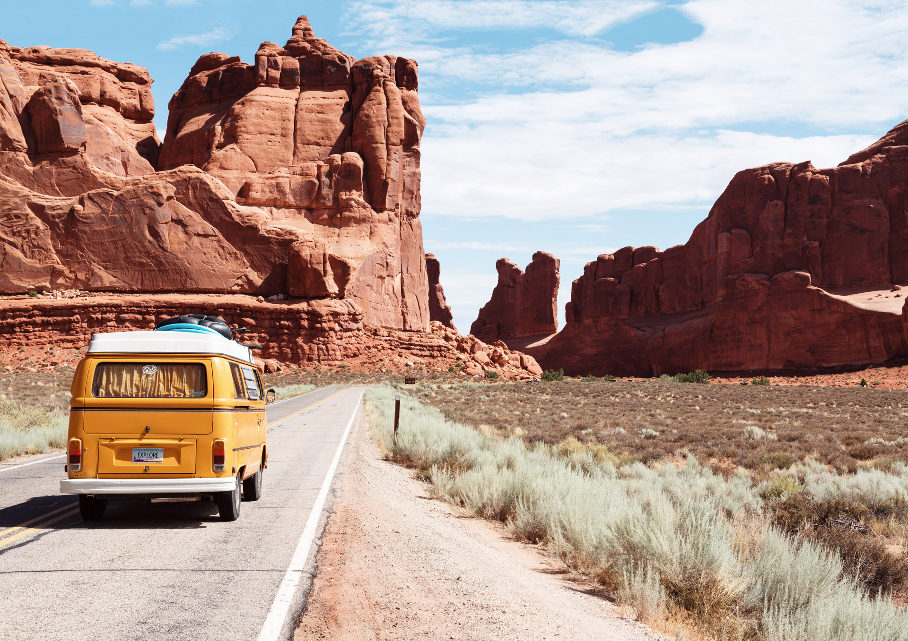

Why Road Trips ?
Road trips are one of the best ways to explore the world. You get the freedom to travel at your own pace, discover hidden places, and enjoy the journey as much as the destination. Whether it's driving through mountains, deserts, or cities, every road trip brings new experiences and unforgettable memories.

My Favorite Road Trip Activities
- Listening to music and podcasts
- Trying local food along the way
- Taking scenic photos
Steps to Plan a Road Trip
- Choose your destination
- Plan your route
- Pack essentials
Amazing Road Trips Around the World
These incredible road trip destinations that offer unique experiences and breathtaking views. Here are some places you should consider:
- Iceland: Known for waterfalls, volcanoes, and glaciers.
- Peru: Offers mountain drives and access to historic sites.
- Canada: Famous for scenic routes through national parks and mountains.
- Europe (Various Regions): Includes alpine roads, coastal drives, and historic towns.
- Australia & New Zealand: Known for ocean roads, wildlife, and dramatic landscapes.
These destinations are known for their incredible natural beauty and unforgettable driving experiences. For example, Iceland offers dramatic landscapes with waterfalls and geysers, while Canada provides scenic mountain drives through national parks.
Useful Links
Visit this site for travel inspiration: National Park Service
Want to see more destinations? Go to the Destinations page.
Contact me for road trip ideas: Send Email